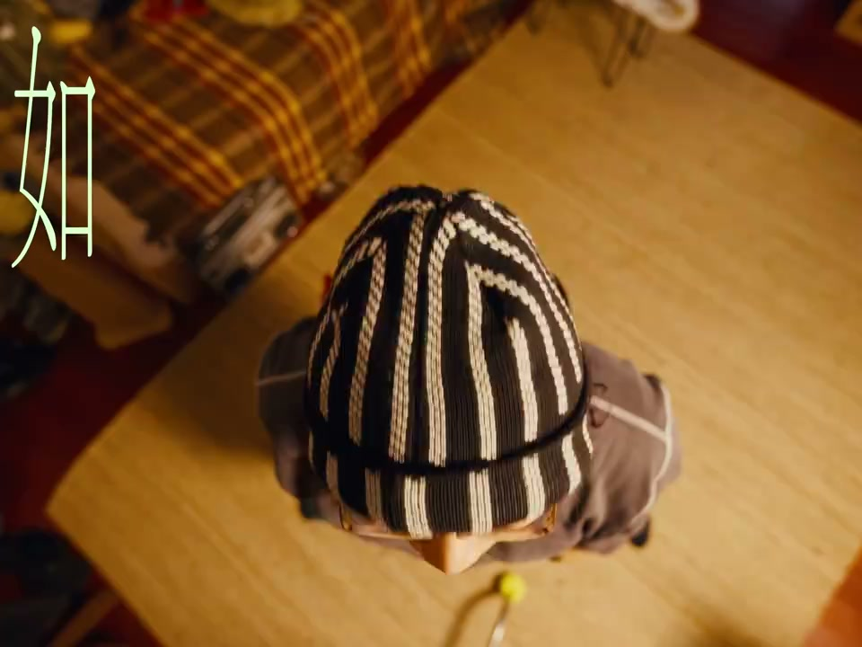
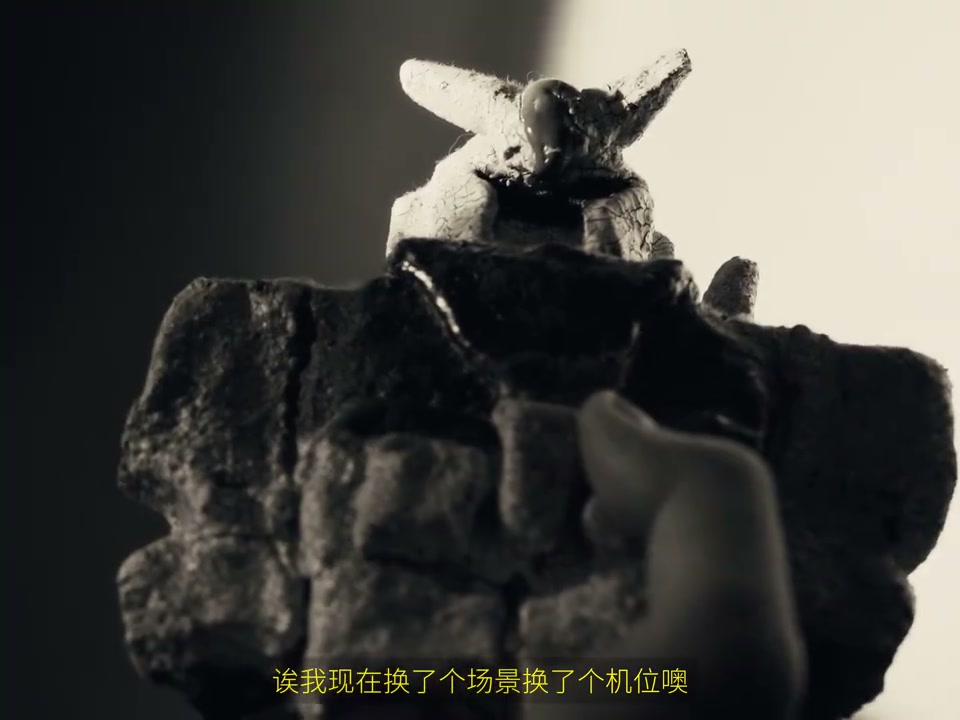
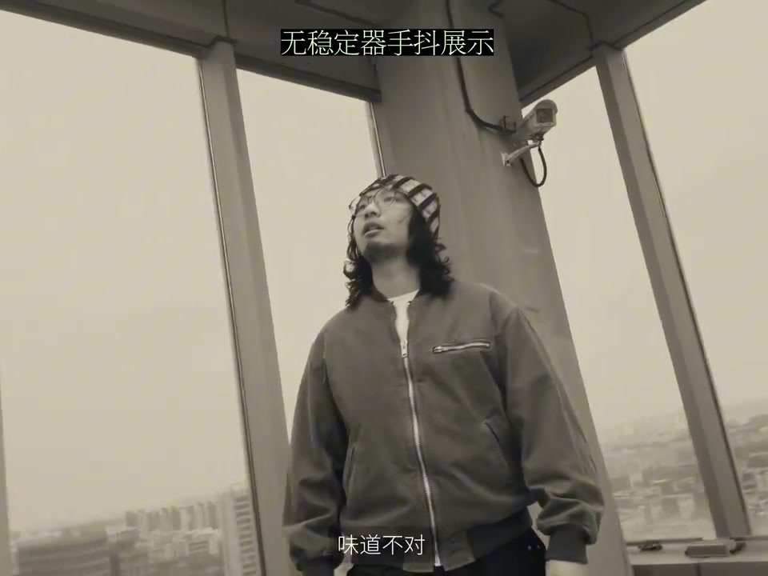
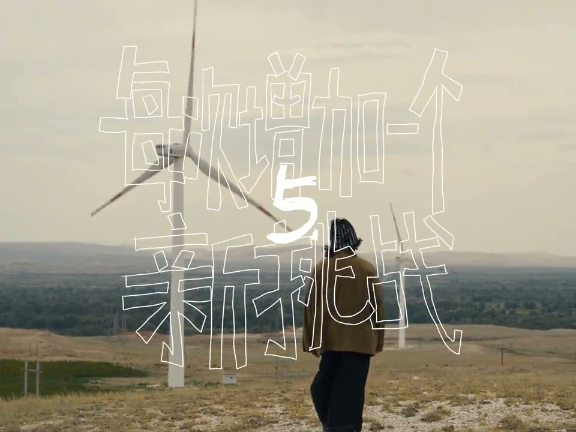

01
中文
如果有人能在我刚开始拍视频做Vlog之后，把这五件事一口气全告诉我，我一定会专门定做一面锦旗感谢他。
EN
If someone had told me all five right after I started, I'd have a custom banner made.
表达提示five things（五件事）

Scene English · Vlog · 新手进阶
These 5 Things Will Quickly Level Up Your Vlog
🎧 语音讲解
Opening: if someone had told me all five o…
情境五件事让Vlog快速变强。
如果有人能在我刚开始拍视频做Vlog之后，把这五件事一口气全告诉我，我一定会专门定做一面锦旗感谢他。
If someone had told me all five right after I started, I'd have a custom banner made.
表达提示five things（五件事）
five things（五件事

Thing one · no forced transitions: don't d…
情境转场要么舒服自然，要么刻意到服务情节。
不要搞太刻意又没意思的转场。
Don't do overly deliberate, boring transitions.
表达提示forced transitions（刻意转场）
脑子里还一直想着这句话说完要转头，只会更加不自然。
Holding in mind 'turn after this line' makes it more unnatural.
表达提示more unnatural（更不自然）
如果两个场景之间没有联系也没有设计，就会像隔靴搔痒一样。
Scenes without connection or design are like scratching through a boot.
表达提示scratch through a boot（隔靴搔痒）
要么反差，要么衔接，换场景才会变得有意思。
Contrast or linkage—that's what makes scene changes interesting.
表达提示contrast or link（反差或衔接）
forced transitions（刻意转场
more unnatural（更不自然
Thing two · mind the light: don't ignore l…
情境等到夕阳时分，选对时间就好看。
让新手车灯光确实要求太高。
Asking beginners to rig lights is too much.
表达提示lighting is too much（灯光要求高）
等到快夕阳的时候再拍，选对的时间都会好看。
Wait until near sunset to shoot—the right time makes it good.
表达提示sunset timing（夕阳时间）
sunset timing（夕阳时间
Thing three · shots that must be steady: s…
情境大范围一镜到底必须上稳定器。
像这样信息又多、运动范围又大的一镜到底，如果是手持拍摄不用稳定器的话，画面难免会一顿一顿的。
An info-heavy, wide-range one-shot, handheld without a gimbal, inevitably stutters.
表达提示must be steady（必须稳）
拉出来揭示环境，还有环绕展示情绪等等。
Pull back to reveal the environment, orbit to show emotion.
表达提示reveal and orbit（揭示与环绕）
你想好不容易设计了一个挺好的画面，因为不稳味道不对，真的很可惜。
A well-designed shot losing its flavor to shakiness is a real shame.
表达提示a real shame（很可惜）
must be steady（必须稳
reveal and orbit（揭示与环绕

Thing four · shots have rhythm: find someo…
情境稀疏画面快闪，亮点多的画面要放慢。
找一个愿意跟你说实话的人。
Find someone who'll tell you the truth.
表达提示honest viewer（说实话的人）
稀疏的画面比如脚步特写、推向眼神，可以快速地闪过。
Sparse shots like foot close-ups and push-ins can flash by.
表达提示sparse shots（稀疏画面）
像一群人众生百态这种亮点很多、需要慢慢看的画面，如果一晃而过观众没看出来，你不是白拍了。
Crowd scenes with many highlights need slow viewing—if they whiz past, you shot for nothing.
表达提示many highlights（亮点很多）
honest viewer（说实话的人
sparse shots（稀疏画面

Thing five · add one new challenge per vid…
情境每一条片子尝试一个新东西。
每一条片子都尝试一个新东西，这是我个人最受益的一点。
Try one new thing per film—this benefited me most.
表达提示new challenge（新挑战）
进步就是一条一条视频堆出来。
Progress is stacked one video at a time.
表达提示stacked progress（堆出来的进步）
热情是最难保护的，千万别让重复毁掉它。
Passion is the hardest to protect—don't let repetition ruin it.
表达提示protect passion（保护热情）
new challenge（新挑战
stacked progress（堆出来的进步
说转场取舍
说光线时间
说必须稳的画面
说画面节奏
说新挑战
刻意转场不适合新手。
选对时间光线就好看。
一镜到底必须稳。
亮点多的画面要放慢。
每期尝试一个新东西。
别让重复毁掉热情。